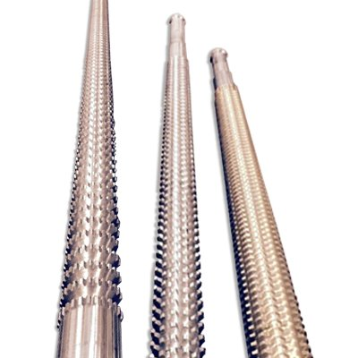

Our Products
Shaktiman Tech. Tools(India) is a renowned name in the field of manufacturing cutting tools based in India. Shaktiman is the leading manufacturer and supplier of broaches, spline gauges, gear hobs, milling cutters, other cutting tools etc. We are endowed with the latest technology, and our products are manufactured under precise caliber measures upholding to the international standards. Our motto is to maintain excellent quality and entire satisfaction of our valuable customers. Our customers are the core pillars in our enterprise, and that’s why our customer service is top-notch. We customize our products according to our customer’s demands and requirements.
- Broaches
Do you want broaches that are effective, original, and are designed to do the job precisely? Look no further, at Shaktiman Tech. Tools we produce broaches that are made from top quality materials. Our broaches are made in several lengths, sizes, and shapes to suit our esteemed customers. Our ability to maintain consistency has made us a renowned company in the field of cutting tools manufacturing. We can manufacture broaches up to 1600 mm length.
- Spline Guages & Mandrels
Taking advantage of our extensive experience, Shaktiman manufactures high-quality industrial gauges and mandrels. Our gauges and mandrels are manufactured from the finest raw materials. Our wide range of gauges includes; Involute gauges, straight spline gauges, straight serration gauges, and special profile gauges.
- Surface Broaches
Our Surface broaches are low in maintenance, high in performance and easy to use. Our surface broaches are manufactured to meet international standards. Our external broach cuts a flat or curved surface with ease and efficiency.
- Cutters
Shaktiman provides a broad range of cutters such as slitting cutters, milling cutters, gear hobs, special cutters, etc. The manufacturing process of Shaktiman cutters involves quality planning, product testing, and quality control which helps us meet the international standards.


Our Products
Shaktiman Tech. Tools is a renowned name in the field of manufacturing cutting tools based in India. We are the leading manufacturer and supplier of broaches, spline gauges, gear hobs, milling cutters, etc. We are endowed with the latest technology, and our products are manufactured under precise caliber measures upholding to the international standards. Our motto is to maintain excellent quality and entire satisfaction of our valuable customers. Our customers are the core pillars in our enterprise, and that’s why our customer service is top-notch. We customize our products according to our customer’s demands and requirements.
- Broaches
Do you want broaches that are effective, original, and are designed to do the job precisely? Look no further, at Shaktiman Tech. Tools we produce broaches that are made from top quality materials. Our broaches are made in several lengths, sizes, and shapes to suit our esteemed customers. Our ability to maintain consistency has made us a renowned company in the field of cutting tools manufacturing. We can manufacture broaches up to 1600 mm length.
- Spline Gauage & Mandrels
Taking advantage of our extensive experience, Shaktiman manufactures high-quality industrial gauges and mandrels. Our gauges and mandrels are manufactured from the finest raw materials. Our wide range of gauges includes; Involute gauges, straight spline gauges, straight serration gauges, and special profile gauges.
- Surface Broaches
Our Surface broaches are low in maintenance, high in performance and easy to use. Our surface broaches are manufactured to meet international standards. Our external broach cuts a flat or curved surface with ease and efficiency.
- Cutters
Shaktiman provides a broad range of cutters such as slitting cutters, milling cutters, gear hobs, special cutters, etc. The manufacturing process of Shaktiman cutters involves quality planning, product testing, and quality control which helps us meet the international standards.
- Spline Gauage & Mandrels